A supervision layer for Claude Code
Which one
needs you?
You already run claude in four terminal tabs. mogeung reads the
files Claude Code writes and answers the only question you cannot answer
yourself: which session to look at next.
It watches. It never starts, steers or stops an agent.
-
WAITINGSettle the label rulesmogeungmainwaiting for you — 4m07s
-
REVIEWA pane per filemogeungmain12 file(s), +1103 −86 unread
-
REVIEWTwo agents at oncemogeungmain42 file(s), +4747 −177 unread
-
runningCodex adapter — classify every linemogeungcodexBash: cargo test --workspace
-
runningDoc staleness sweepmogeungmainRead: docs/design/architecture.md
A session that hits a permission prompt is blocked, not merely finished — so APPROVE outranks everything and climbs to the top the moment it happens.
WAITING is not a guess. Claude Code publishes
busy/idle in its own live registry. mogeung is
told, not inferring.
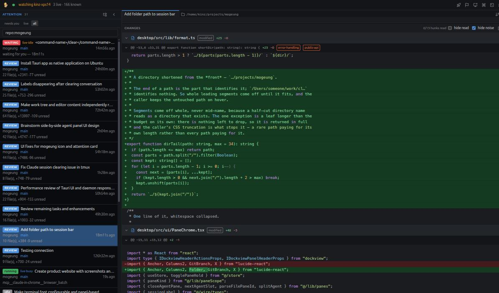
The shape of it
Supervision has to be additive.
The first version of mogeung spawned and wrapped agents. It made every individual session worse, and it was thrown away. What replaced it only reads: because it never sits between you and the agent, it cannot cost you anything you already had.
Reads, never writes
It watches the files Claude Code already leaves behind. Nothing is ever
written to ~/.claude. Your interactive loop, plan mode,
slash commands and permission prompts are untouched.
The change is the root object
Not the file. What you reason about is what moved, whether it is safe, and whether you have read it — so the diff, not the tree, is what the window is built around.
The daemon is the product
Every UI is a client with no local authority. The window can host the daemon or attach to one that outlives it — including one on another machine, over an ssh tunnel.
Attention · Alt+1
One queue across every session.
Every session you have run in the last 14 days, in one list, sorted by who needs you rather than by what happened last. Nothing to configure and no repos to register.
Blocked on a permission prompt it needs you to answer. An unanswered tool call, not merely an idle agent.
Alive and idle — it is waiting for you to type.
Hit an API error and stopped there.
Exited, and left changes nobody has read. The count of unread hunks is on the row.
Alive and busy, but silent past a threshold.
Working normally. Nothing for you to do.
Changes
Alt+2One diff per session, ordered by risk rather than by path — so reading order is risk order, and the hunk that touches error handling or a public API arrives before the import shuffle. Tick hunks as you read them; the marks are anchored to content, so they survive the agent rewriting the file underneath you.
Transcript
Alt+3The conversation as structure, not scrollback: every line classified as prompt, agent, tool call, result or thinking, and filterable on that. Markdown renders, thinking folds away, and newest-first turns the whole thing around when you are catching up rather than reading through.
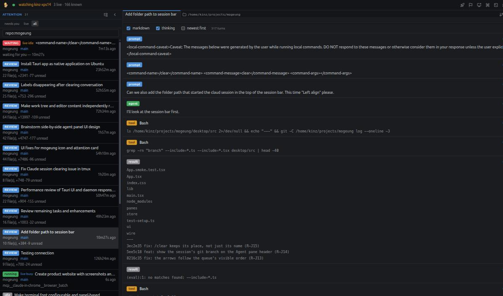
Bookmarks
Alt+BMark the turn you will want again, and it is in one list across every session — newest first, each showing the turn it points at, each a click away from jumping back there. Marking a turn and writing about it are one gesture with two depths: an empty mark is a plain bookmark, and anything you type becomes its name.
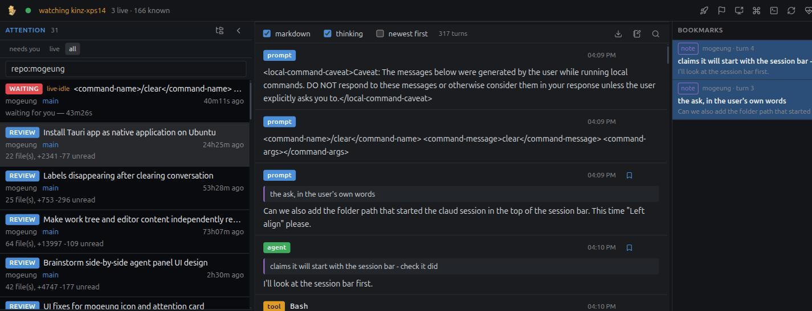
Notes, and copy-to-note
Alt+N
A mark points at a turn and dies with the transcript. A note
takes the words with it and outlives the session — so one
button copies a turn, or a whole conversation, into a note of its own. A
copied conversation states what it left behind rather than looking
complete: “Earlier 117 turn(s) not copied — this is the
tail.” Every note is mirrored to
~/.mogeung/notes/*.md, so losing the database loses history
but not the writing.
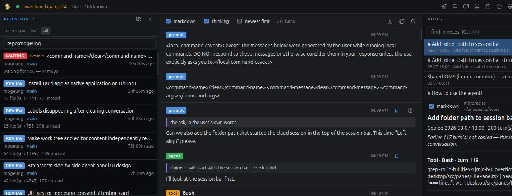
With one agent you need no tool.
With four, the bottleneck is not reading code. It is knowing which of the four to read. Everything else on this page is downstream of answering that.
Git
Alt+9A commit view built to the standard of a commercial client: log with message filtering, local branches, refs, stashes, file history and blame. Pick a commit and you get its message, the refs it carries, its files and the diff of the one you click. Staging, committing, branching and stashing are local writes only — nothing is ever pushed for you.
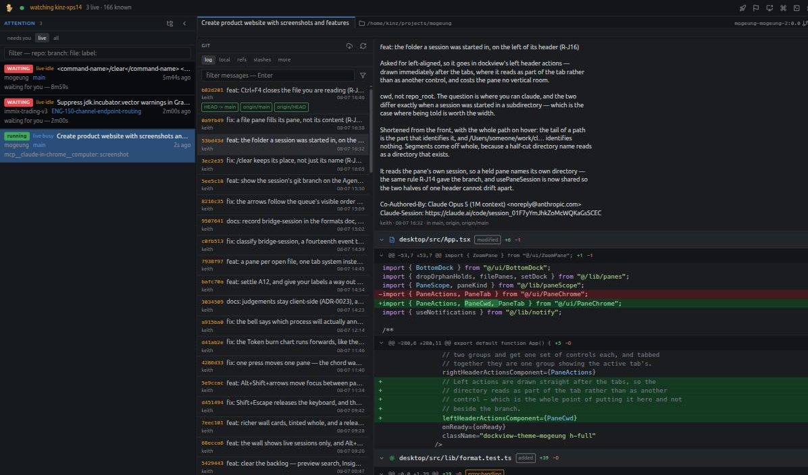
Worktree & file panes
Alt+FThe repository the selected session is working in, with a regex filter over names and content. Open a file and it gets a pane of its own — syntax highlighting, a minimap, go-to-symbol. A viewer, not an editor: this window shows you what the agent did, and the agent keeps the write lock.
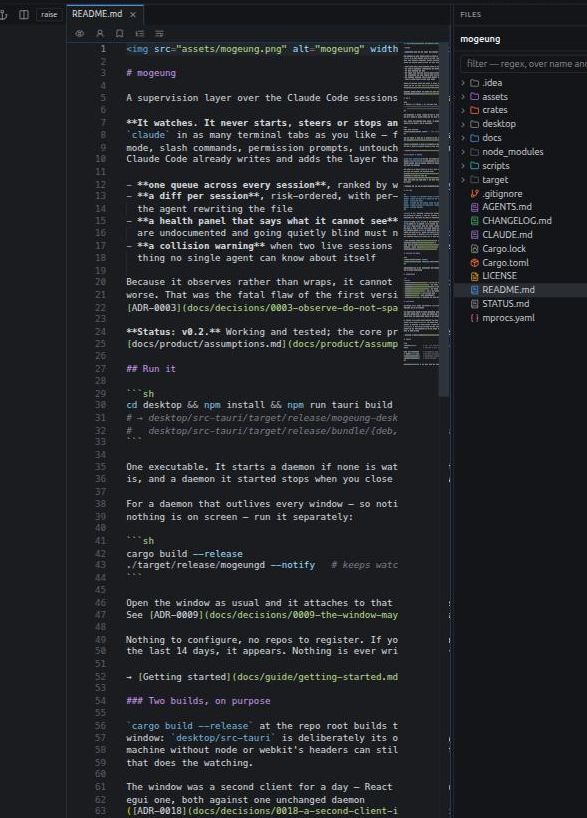
Search everything
⌘+⇧+FThree scopes at once: this conversation, this session's files, and every session you have ever run. Exact matches sort above fuzzy ones. The overlay is the ask-and-go one; the rail on Alt+S is the keep-it-open one.
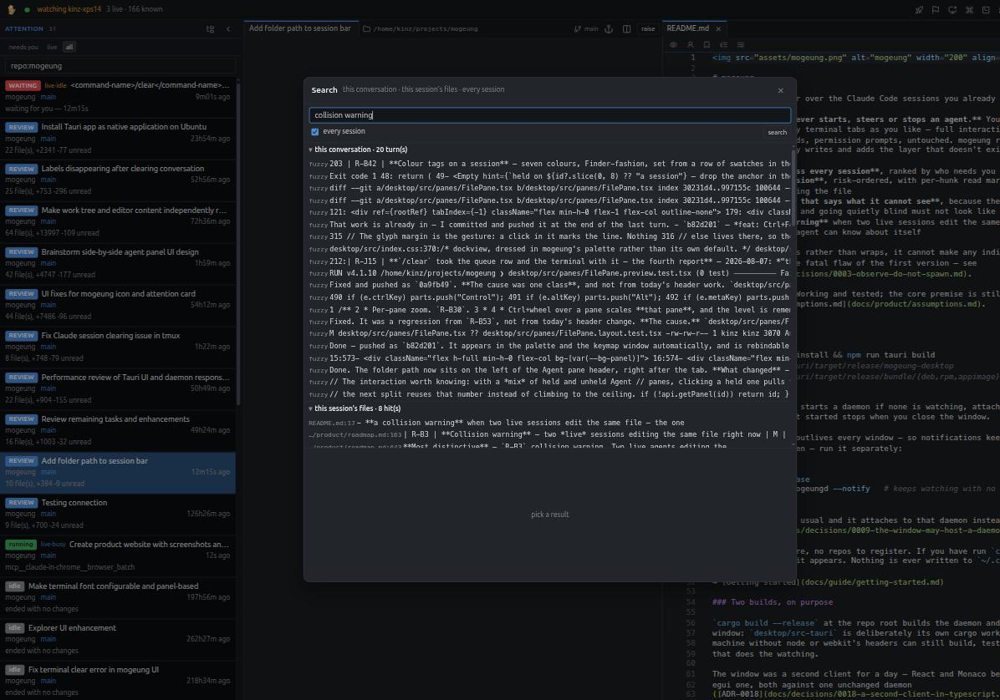
The root object is the change.
Not the file. Files are a projection of accumulated changes; what you actually reason about is what moved, whether it is safe, and whether you have read it.
Insight
Alt+4Ten views over everything you have ever run: Search, Analytics, Digest, Prompts, Failures, Decisions, Blame, Docs, Memory and Skills. Analytics is the shape of your own working week — sessions and prompts per day, the hours you actually work, and token burn. Tokens, never dollars: the price list is not ours to quote.
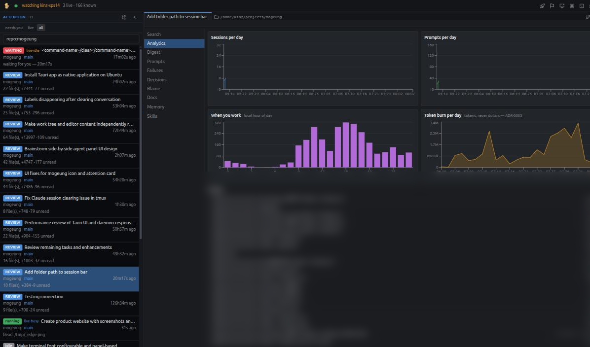
Debt
Alt+5Unread work, worst first — not a list of sessions but a list of files, ranked by how much has landed in them that nobody has looked at. This is the backlog you accrue by letting four agents run while you read one.
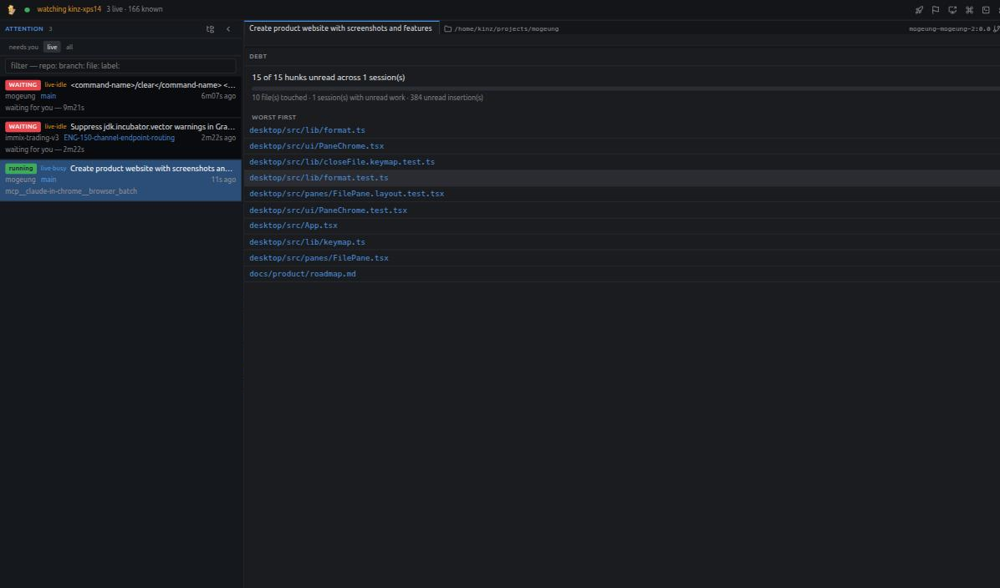
Doc staleness
Insight → Docs
Point it at a repository and it inventories the markdown, then flags every
document whose covered code has moved since it was last updated —
docs/design/architecture.md · desktop moved 35 commit(s) since.
Proposals only. The daemon never writes to a watched repo.
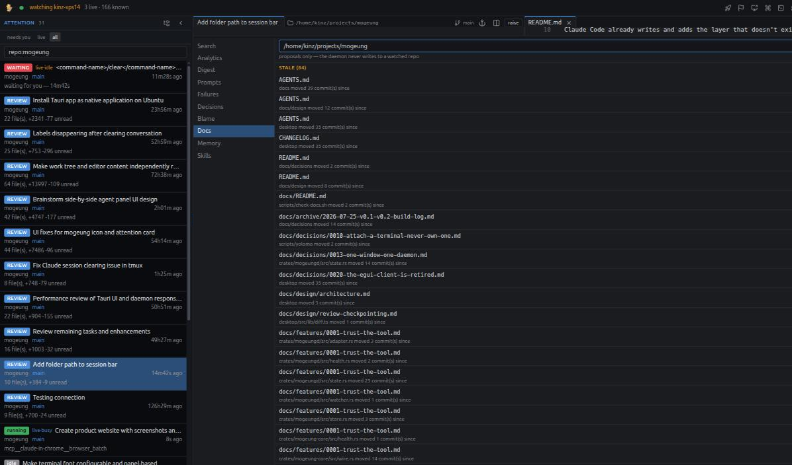
Decisions & claims
Insight → DecisionsThe moments an agent chose one thing over another, lifted out of the transcript — rather than, instead of, because — so a design argument buried in turn 212 is findable later. Candidates for a human to skim, never authority. Alongside it, verification: a claim like the build passes is checked against whether a build was actually run, and contradicted claims are marked.
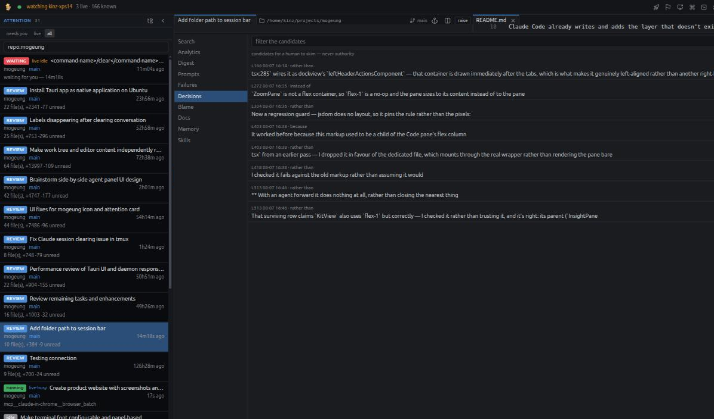
It says what it cannot see.
Every format it reads is undocumented and can change on an upgrade. Going quietly blind must not look like a quiet day — so the blind spot is a number on the screen rather than an assumption.
The wall
Alt+WEvery live session at once, as tiles — state, how long it has been in it, turns, diff size, tokens out, and the last thing it did. Click a tile to go to it. This is where a session gets called thrashing, and where a collision warning lands when two live sessions edit the same file: the one thing no single agent can know about itself.
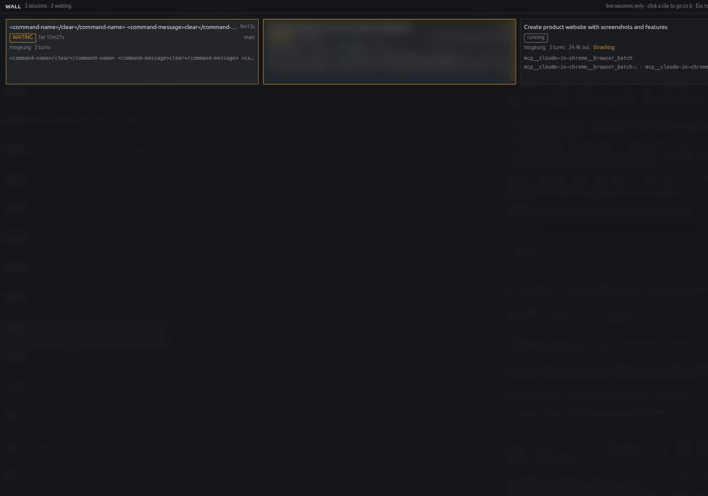
Health
Alt+HThe panel that exists to say what mogeung cannot see. Every line is accounted for — parsed, ignored-and-known, malformed, unknown type — and the blind spot is a number on the screen. It also notices when the CLI version moves under it.
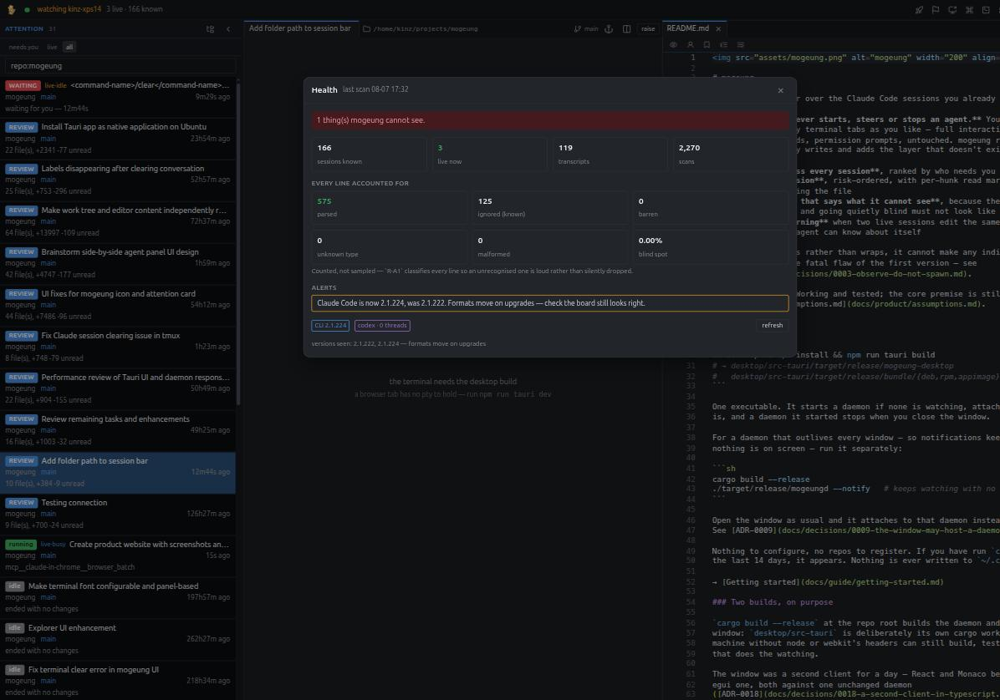
Keyboard
Alt+KForty-two actions, every one rebindable — click a key to change it. The dock uses digits rather than initials on purpose: Alt+T is Claude Code's own toggle thinking, and a window that keeps it is a window that steals a key from the agent it is showing you.
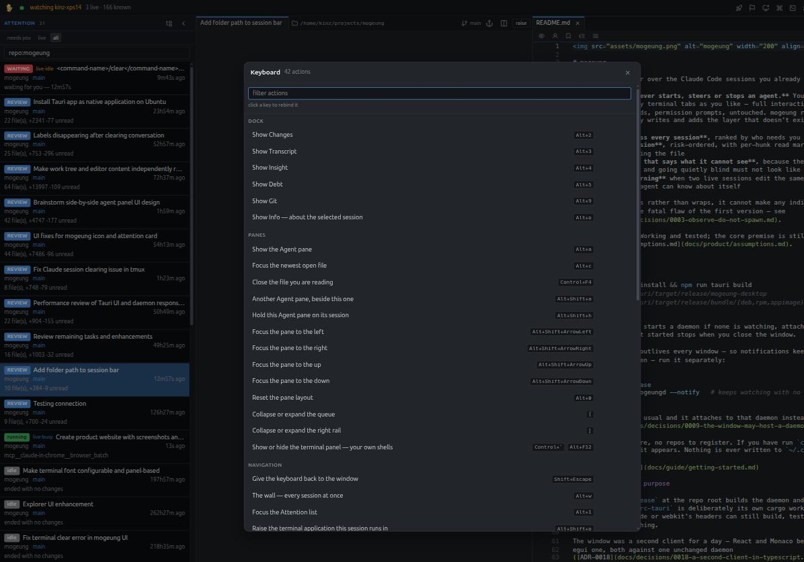
Agent
Alt+AThe session's own terminal, attached rather than owned. mogeung opens a view onto the tmux session the agent is already running in — so you type into the real Claude Code loop, with its permission prompts and plan mode intact. Two Agent panes can sit side by side, each pinned to a different session.
it is the one screen that cannot be captured from the dev server.
Install
One executable, nothing to configure.
It starts a daemon if none is watching, attaches to one if there is, and a
daemon it started stops when you close the window. If you have run
claude anywhere in the last 14 days, it appears.
The window
# builds a binary plus .deb, .rpm and an AppImage
cd desktop && npm install
npm run tauri build
A daemon that outlives it
cargo build --release
./target/release/mogeungd --notify
# or push, when you are away from the desk
mogeungd --push-url https://ntfy.sh/your-topic
- NeedsRust 1.85+,
git, and Claude Code 2.1.x onPATH. The window additionally wants node 20+ and the system webview; the daemon needs neither. - PlatformsmacOS and Linux. Windows is not supported and is not planned.
- StateLives in
~/.mogeung/mogeung.db, with notes mirrored to~/.mogeung/notes/. Nothing is ever written to~/.claude. - ExposureBinds loopback and needs no token there. Beyond loopback it refuses to start without a shared secret, and there is no flag to talk it out of that. The safest route stays an ssh tunnel.
- NotificationsFire on the transition into needing you, once — never on a state that is merely continuing. The tray carries the waiting count.
- Also readsA Codex adapter is in progress, behind the same classifier.
The caveat worth knowing up front
Everything here rests on undocumented Claude Code file formats that an update can change. That is why the Health panel is a headline feature rather than a diagnostic: the failure mode this tool has to defend against is going blind without saying so. mogeung is v0.2 — working and tested, with its core premise still unproven.